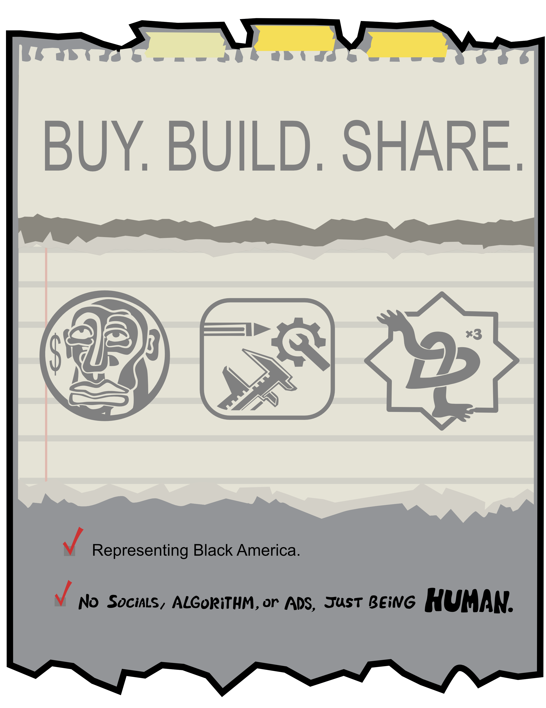
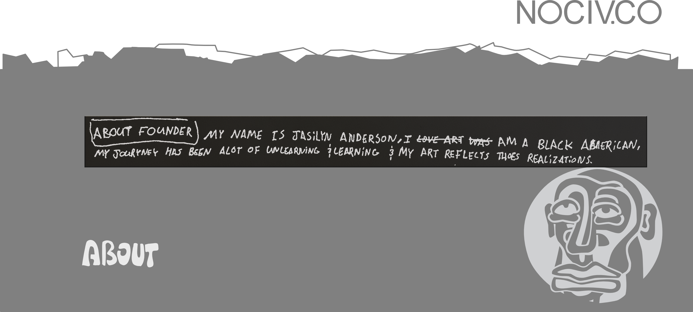

Four sides of the same thing. Jump to any of them, or just keep scrolling.
NOCIV is an Arizona based creator brand. Creator in the original sense: someone who makes things, not content for a feed.
NOCIV isn't content. It's clothing: Black-owned, reclaiming what "American" looks like off the feed and onto your body.
No ads. If you're here, someone told you.
NOCIV uses the internet as a starting point, not the destination. A website can introduce you to an artist, a tool, a zine, a garment, or an idea, and from there it leads to a pop-up, a workshop, a conversation, or a physical object you make yourself. It's not a single product line, it's a creative practice expressed across clothing, art, hardware, writing, software, and physical community.
This platform runs without algorithms, ads, or tracking. No paid promotion, no chasing shares. Growth happens the old way: a sticker on a lamppost, a flyer in a coffee shop window, a business card on a counter, someone wearing a piece in public.
Why express it through so many mediums? Why not?
It isn't about going backward, or pretending we can return to a previous era. It's a reminder that the systems, objects, and norms around us aren't permanent features of nature, because somebody built them. We buy things without knowing who made them, use technology without understanding how it functions, and live inside social norms as if they simply exist on their own. But every system, tool, and product was constructed by people.
We built this world. Which means we can build something else.

Clothing is where we begin. Design, culture, and human connection are where we go. Here's what that looks like in practice: three honest ways in, and you choose how far you go.
Get something directly from Nociv: clothing, hardware, a zine. Support the brand and take home something real.
Use the free tools we provide: the Clothing Pattern Builder, the Zine Builder. Make your own thing instead of buying one.
Connect with the Arizona creative community: the Stall Wall, the Directory, the Share board. No purchase required, just show up.
The site is a platform for participation. You choose how.
NOCIV is built in Arizona. Arizona is home.
Born in California and raised in Texas before moving to Arizona, identity has always been a hybrid experience for me, but a brand needs to physically exist somewhere to build real community.
Arizona is where NOCIV collaborates, hosts, crafts, and builds in person. Those connections start locally, but they travel globally.
NOCIV is Arizona based, not Arizona limited.
NOCIV is a Black American owned company, and that foundation shapes everything we create. Our roots in this country run deep. Black Americans didn't just survive here. We built, adapted, and forged a culture that continuously shapes world history.
We know who we are. We are not lost. We are here.
Representing Black America means honoring that legacy without flattening it into caricature, not just sanitized "Black excellence" or historical stereotypes, but Black life in all its nuances, contradictions, regional styles, and creative expressions.

I'm Jasilyn Anderson, also known as Lofty Lyn. I'm a creator and self-described Renaissance woman.
Trying to fit NOCIV into a single neat business category never worked, because that isn't how my brain operates. You won't find personal or company social media profiles here. Instead of chasing engagement metrics, I collect interests like Infinity Stones: art, design, textiles, hardware design, programming, writing, and physical fabrication. There is something deeply fulfilling about starting with zero knowledge, figuring out one piece at a time, and making something tangible that didn't exist before.
NOCIV reflects that same multidisciplinary energy. It is built for anyone who refuses to pick just one discipline and stay there forever. Artists, builders, programmers, writers, designers, and anyone who wants to try something new are all part of the same ecosystem.